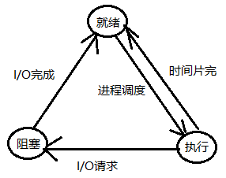
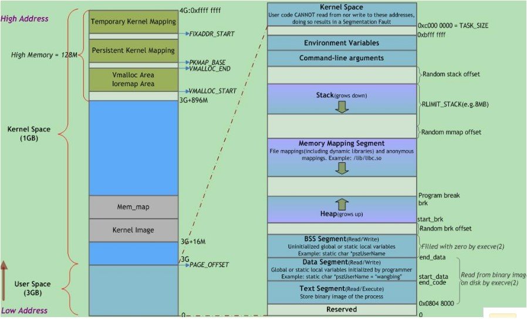

进程
今天开始复习一些操作系统方面的知识，从最基本的进程开始。 进程 在早期的单道批处理系统中，一次只能向内存中装入一个程序来运行，另一个程序只有等到这个程序运行完成后才能被装载，因此程序执行的关系是串行的，并没有进程这个概念。 单道系统的缺点是太慢了，一次只能运行一个程序不说，当这个程序遇到 I/O 操作，资源申请等耗时操…
进程
今天开始复习一些操作系统方面的知识，从最基本的进程开始。
进程
在早期的单道批处理系统中，一次只能向内存中装入一个程序来运行，另一个程序只有等到这个程序运行完成后才能被装载，因此程序执行的关系是串行的，并没有进程这个概念。
单道系统的缺点是太慢了，一次只能运行一个程序不说，当这个程序遇到 I/O 操作，资源申请等耗时操作时，CPU 就被闲置起来了，导致计算机资源无法被充分利用。
因此人们开发了多道程序系统，一次可以在内存中装入多个程序的代码和数据，并且使其并发执行。因此操作系统就需要唯一标示这些程序。因而就出现了进程的概念。每个进程在内核中都有一个 task_struct 的结构体，称为 PCB（Process Control Block，进程控制块)，里面存放着该进程的一系列相关信息，如指令指针寄存器的值、堆栈指针、PID、PPID，就绪状态等。进程控制块在整个系统层面唯一标示一个进程的存在，内核也使用它来对进程进行一系列的操作。
有了多个进程，但 CPU 只有一个呀。所以操作系统就需要对这些进程进行安排，使同一时刻只能有一个进程运行在处理机上，这就是进程调度。进程调度算法有以下几种：
- 轮转调度算法：其中最常见的是时间片轮转调度算法。该算法采用了非常公平的处理机分配方式，即让就绪队列上每个进程每次仅运行一个时间片，之后立即切换；
- 优先级调度算法：轮转法的缺点是假设系统中每一个进程的急迫程度相同，但实际并不是这样。因此引入了优先级，即每次从就绪队列中取出优先级最高的一个进程为其分配处理机。在 Linux 系统上，增加了 nice 值，进程的真正优先级为原来优先级的值加上 nice 值。值得注意的是，nice 值可能是一个负数，因此可以很灵活的动态调整一个进程的优先级；
- 多队列调度算法：该算法不是将所有的就绪进程放在同一个队列上，而是按不同的性质将进程分配在不同的就绪队列上，一个就绪队列中的进程可以设置不同的优先级；
- 多级反馈队列调度算法：此算法设置了优先级不同的多个队列，为每个队列中进程分配的时间片也不一样，优先级和时间片成反比关系。在每个队列中采用 FCFS（先来先服务）算法。调度程序从优先级最高的队列开始调度，只有当优先级较高的队列为空时才可以调度优先级较低的队列中的进程。
调度是根据进程的状态来进行的，一个进程的状态转移图如下，也就是进程的生命期：

在 32 位系统下，CPU可寻址的范围是 $0\sim2^{32}-1$，每个进程都有自己独立的 4GB 地址空间，称为虚拟地址空间。自底向上分别为代码段、数据段（已初始化数据段和未初始化数据段）、堆、共享区、栈、命令行参数和环境变量区、内核区。其中内核区占据了 $\frac14 * 4GB=1GB$ 的空间，其余的用户区占了$\frac34 * 4GB=3GB$。
具体见下图:（图片来自网络)

进程间通信
现代操作系统中，进程间通信的主要手段有：管道、FIFO、消息队列、共享内存、信号、信号量、socket。
- 管道：管道是进程间通信最方便的手段了。管道本质上就是一段缓冲区，存在于内核中，写进程将数据以字符流的形式写入管道，读进程就可以在管道的另一端读出。但要注意的是，管道本身是单工的，如果要实现双向通信，必须打开两个管道，并使读进程关闭写端，写进程关闭读端。当然也可以使用 socketpair() 函数代替。如果写进程关闭了管道，读进程的 read() 操作就会返回 0，表示对端已经关闭；如果读进程关闭了管道，写进程在写入时，write() 操作就会触发一个 SIGPIPE 信号，该信号的默认处理动作是终止进程。所以我们一般要重新注册该信号的信号处理函数。管道还有一个缺点是只能用于具有亲缘关系的进程间通信。
- FIFO：是一个文件，所以只要任意两个进程分别以读写的方式打开这个文件，就可以实现通信，不必局限于亲缘关系进程。当一个进程 open 这个文件而另一个进程还没有 open 时，前者会被阻塞住，直到另一个进程也打开这个文件。
- 消息队列：即存放消息的链表，存放在内核中。消息队列克服了管道只能用于亲缘进程和承载信息量少等缺点。写进程只需要用 msgsnd 系统调用将数据添加到队列的末尾，任意一个进程就可以从队列中读取。需要注意的是，写入和读取的顺序不一定是一致的。
- 共享内存：共享内存是这几种 IPC 方式中最快的，因为它是由一个进程开辟一块空间，另一个进程只需要读取就可以，避免了数据在用户态和内核态的拷贝操作（共享内存通信只需要对数据一读一写，而其他方式需要两次读两次写操作）。因为两个进程共享了一块空间，所以需要某种形式的同步操作，这和操作系统提供的同步方式有关，互斥锁和信号量都可以。
- 信号：在 Linux 系统上，共有 62 种信号。其中前 32 种是标准信号，后面为实时信号。Linux 内核中存放了 3 张表，block 表，pending 表和 handler 表，分别代表阻塞信号、信号递达和信号处理函数。其中 block 和 pending 表用位图实现。因为一个进程可以给另一个进程发送信号，所以也可以算是一种狭义的进程间通信。
- 信号量：信号量和信号不同，信号量是由 Linux 系统提供的用于不同进程或同一进程下不同线程之间的同步与互斥操作。对于一个信号量有两个原子操作 P 操作和 V 操作。P 操作即 wait 的意思，用来对信号量的值减 1；V 操作即 signal，用来对信号量的值加 1。当一个进程或线程执行 P 操作时，如果信号量的值大于 1，则对其减 1，并为该进程分配请求的资源，否则挂起该进程。V 操作则会释放该进程拥有的资源。P/V 操作必须成对出现！
- socket：以上所有方式中都只能在同一主机上的两个进程间通信，要让互联网上两个不同的主机上的两个进程通信，必须使用 socket。具体到后面复习到网络编程部分再详细记录。
以上就是目前常用的进程间通信方式。
【完】